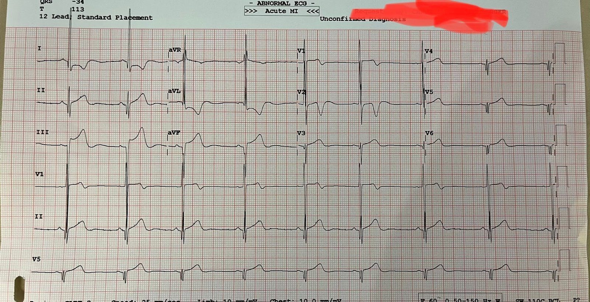
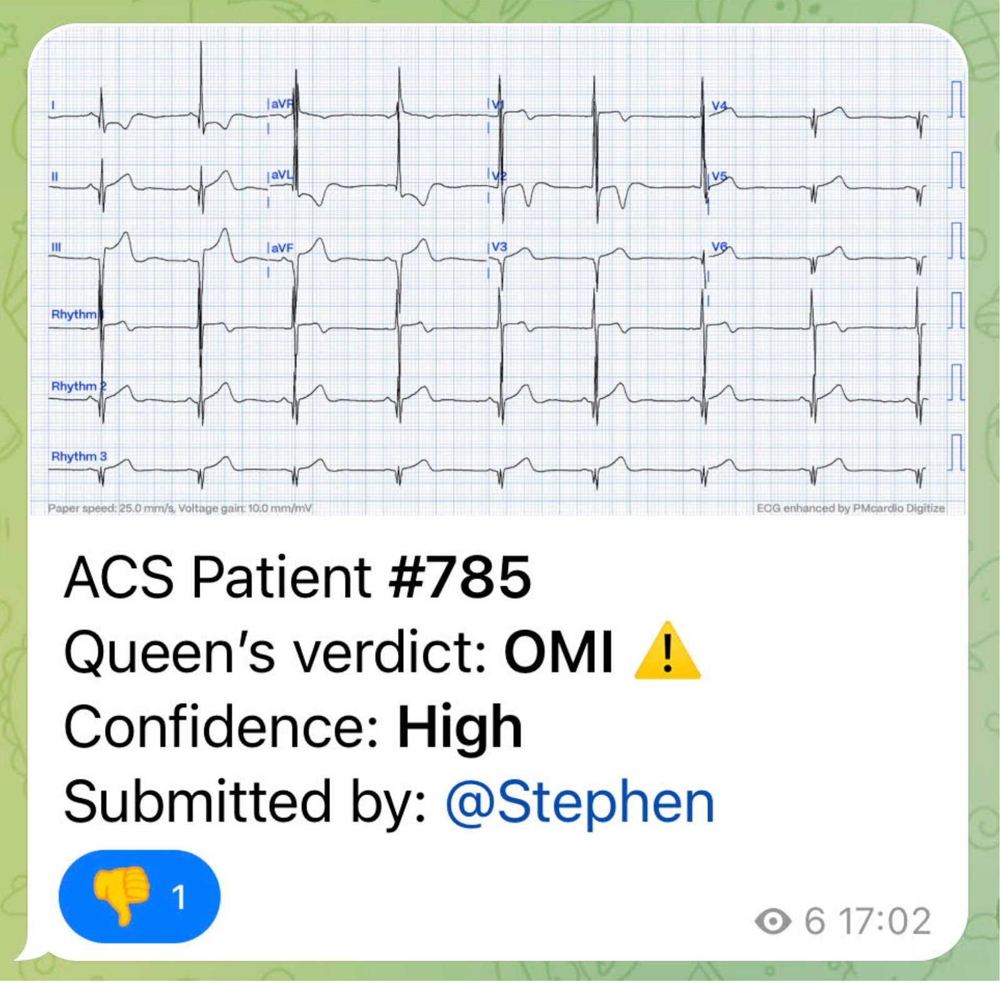
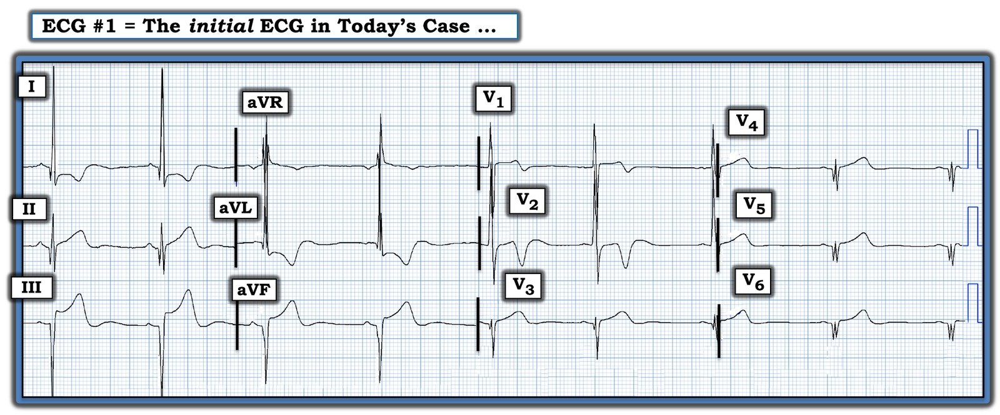

05/07/2023 — Ca này được nhắn tin cho tôi theo thời gian thực. Bệnh nhân đau ngực cấp.
Bản dịch tiếng Việt của bài "This was texted to me in real time. The patient has acute chest pain." – Dr. Smith’s ECG Blog. Giữ nguyên toàn bộ 4 hình ảnh của bản gốc.
Ca này được nhắn tin cho tôi theo thời gian thực. Bệnh nhân đau ngực cấp.


Bạn nghĩ gì?
Đây là câu trả lời của tôi:
“Không phải thiếu máu cục bộ. Mạn tính. Có thể là HOCM (bệnh cơ tim phì đại tắc nghẽn) hoặc một dạng LVH khác. Tôi sẽ không kích hoạt phòng thông tim. Hãy làm troponin liên tiếp”
Đây là một điện tâm đồ đáng sợ, với nhiều ST chênh lên và những gì trông như sóng T tối cấp (hyperacute T waves) ở các chuyển đạo dưới, cùng ST chênh xuống soi gương (reciprocal) rất sâu ở aVL. Có sóng Q ở V4-V6, kèm những gì trông như sóng T tối cấp.
Bất kỳ phân tích khách quan, dựa trên quy tắc nào đối với điện tâm đồ này cũng sẽ gào lên “STEMI” hoặc “OMI”. Nhưng than ôi, điện tâm đồ giống như khuôn mặt. Không phép đo nào có thể cho bạn biết danh tính của một khuôn mặt. Nó phải được nhận ra.
Và tôi đã nhận ra đây là một ca giả STEMI (STEMI mimic). Tôi đã nói với họ như vậy, do đó họ KHÔNG kích hoạt phòng thông tim, mà đo troponin liên tiếp.
Bệnh nhân được loại trừ nhồi máu cơ tim bằng troponin liên tiếp. Diễn tiến tiếp theo ở bên dưới.
Chúng tôi đang huấn luyện thuật toán AI Queen of Hearts để nhận ra những ca như thế này, nhưng chúng tôi cần huấn luyện nó với nhiều ca dương tính giả hơn nữa.
Trong ca này, QOH đã sai, khi đưa ra kết luận “OMI độ tin cậy cao.”
Tôi đã gửi điện tâm đồ này cho Queen of Hearts (PMcardio OMI), và đây là phán quyết:


Diễn tiến:
Người đàn ông trẻ này không có bệnh động mạch vành (CAD) trên CT. Troponin I độ nhạy cao (HS Trop-I) là 15 và 19. Siêu âm tim qua thành ngực (TTE) ở bên dưới. MRI tim ngoại trú đang chờ.
1. Thất trái có kích thước bình thường. Có phì đại đáng kể
được ghi nhận ở các phân đoạn thành trước, trước vách và trước bên. Chức năng tâm thu thất trái ở giới hạn dưới của bình thường đến giảm nhẹ, với LVEF ước lượng bằng mắt là 50-55%.
2. Giá trị sức căng dọc toàn bộ (global longitudinal strain) trung bình là -14,5%, bất thường nhẹ, với sức căng giảm được ghi nhận ở các phân đoạn trước, trước bên và trước vách.
Nhìn chung, các dấu hiệu có thể phù hợp với một bệnh cơ tim thâm nhiễm. Có thể cân nhắc đánh giá thêm bằng MRI tim tùy theo mức độ nghi ngờ lâm sàng.

===================================
BÌNH LUẬN CỦA TÔI, bởi KEN GRAUER, MD (5/7/2023):
===================================
Ca hôm nay mang tính giáo dục vì một số lý do: i) Dù thuật toán AI QOH (Queen Of Hearts) đã tốt đến mức nào — nó vẫn không hoàn hảo; — và, ii) Cả chúng ta với tư cách là người làm lâm sàng, lẫn QOH — sẽ tiếp tục bị thử thách bởi các hình ảnh “giả nhồi máu” (pseudo-infarct patterns).
- Cho rõ ràng — tôi đã tái hiện điện tâm đồ hôm nay ở Hình 1, sau khi xóa bỏ yếu tố gây xao nhãng là 3 dải nhịp chuyển đạo dài nằm bên dưới điện tâm đồ gốc với các phức bộ QRS chồng lấn gây rối mắt.


VÌ SAO QOH Lại Sai?
Tôi không coi chẩn đoán sai mà QOH đưa ra là một “lỗi” theo nghĩa thông thường của từ này. Thay vào đó — đây là một phản hồi hoàn toàn dễ hiểu đối với một ứng dụng AI, bởi vì:
- i) Các hình ảnh “giả nhồi máu” có thể rất khó. Do đó — thường sẽ không thể đưa ra chẩn đoán xác định chỉ dựa trên một điện tâm đồ duy nhất, nhất là khi không có đủ thông tin đối chiếu lâm sàng.
- ii) Nhiều hình ảnh “giả nhồi máu” có những dấu hiệu điện tâm đồ độc nhất vô nhị. Do đó — chỉ có một số lượng hạn chế các bản ghi “để luyện tập” có chẩn đoán được xác nhận bằng thông tim để đại diện cho vô số biến thể điện tâm đồ có thể có của bất kỳ bệnh cảnh lâm sàng nào có thể tạo ra hình ảnh “giả nhồi máu”. Như có thể hình dung — điều này khiến việc “huấn luyện” QOH một cách đầy đủ, bằng cách cho nó tiếp xúc với đủ số lượng bản ghi luyện tập mà chúng ta biết đáp án, trở nên cực kỳ khó khăn.
VÌ SAO CHÚNG TA Lại Đúng?
Tôi đã xem bản ghi hôm nay trước khi đọc câu trả lời của Dr. Smith. Ấn tượng ban đầu của tôi về điện tâm đồ này giống với Dr. Smith — ở chỗ mặc dù có những thay đổi sóng ST-T đáng báo động, tôi không nghĩ điện tâm đồ #1 là kết quả của một biến cố cấp tính. Thay vào đó — suy nghĩ của tôi như sau:
- Nhịp là nhịp xoang, với nhịp chậm rõ rệt và có thành phần loạn nhịp xoang.
- Biên độ QRS tăng rất nhiều ở một số chuyển đạo. Rõ nhất là sóng R 26 mm ở chuyển đạo I — với sóng S sâu gần tương đương ở chuyển đạo III (trong đó phức bộ QRS bị cắt cụt bởi mép dưới của bản ghi).
- Biên độ QRS cũng lớn ở các chuyển đạo chi khác — và ở các chuyển đạo V1,V2, nơi có sự chồng lấn gây rối mắt. Sóng R 10 mm ở chuyển đạo V1 là quá mức ở người trưởng thành — với vùng chuyển tiếp sớm “bắt mắt” ở các chuyển đạo trước ngực (tức là sóng R đã trở nên ưu thế ngay từ chuyển đạo V2).
- Có sóng Q sâu (dù hẹp) đến mức đáng ngạc nhiên ở không dưới 9/12 chuyển đạo! (tức là ở các chuyển đạo I,II,III; aVL,aVF; và ở V3 đến V6). Những sóng Q hẹp này sâu đáng ngạc nhiên ở các chuyển đạo V4,5,6 — nơi sóng R, vốn đã trở nên rất dương từ sớm ở vùng chuyển tiếp, giờ chỉ vừa chạm tới đường nền.
- Sóng T nổi bật ở hầu như mọi chuyển đạo — với ST chênh lên dốc lên ở các chuyển đạo dưới, và sóng T dương không cân xứng ở các chuyển đạo dưới và các chuyển đạo bên trước ngực. ST chênh xuống, với hình dạng ST-T chênh xuống là hình ảnh soi gương ngược chiều, được thấy ở các chuyển đạo bên cao I,aVL khi so với hình ảnh sóng ST-T ở chuyển đạo III và aVF.
- Có sóng T đảo ngược gần như “khổng lồ” ở chuyển đạo V2 (tức là sóng T đảo ngược = 7 mm ở chuyển đạo này).
Tổng hợp lại tất cả:
- Nhiều dấu hiệu điện tâm đồ bất thường trên bản ghi hôm nay “đơn giản là không khớp” với OMI cấp.
- Giống như Dr. Smith — tôi nghĩ biên độ sóng R khổng lồ kèm ST chênh xuống ở chuyển đạo I là dấu hiệu chẩn đoán một dạng nào đó của LVH.
- Khi không có QRS giãn rộng — sóng R dương rõ rệt ở chuyển đạo V1 gợi ý hoặc lực vách tăng (increased septal forces) hoặc RVH.
- Sự hiện diện của sóng Q sâu, mảnh ở rất nhiều chuyển đạo — nhất là với hình thái QrS kỳ dị ở các chuyển đạo V4,5,6 (với sóng r rất nhỏ mặc dù có LVH rõ ở chuyển đạo I) có vẻ gợi ý nhiều hơn tới một dạng bất thường nào đó của bệnh tim cấu trúc nền hơn là một hình ảnh nhồi máu cơ tim cấp.
- Tôi nghĩ sóng T đảo ngược rất sâu ở chuyển đạo V2 có thể chỉ đơn giản phản ánh một “chuyển đạo chuyển tiếp”, xét đến sóng R dương đáng ngạc nhiên ở chuyển đạo kế bên V1 — và các chuyển đạo V3 đến V6 thiếu sóng R một cách kỳ dị.
- Mặc dù có độ lệch đoạn ST rõ (>2 mm) ở 5 chuyển đạo chi — tôi nghĩ hình dạng của sóng ST-T ở các chuyển đạo này phù hợp với LVH hơn nhiều so với nhồi máu cấp.
Có Chẩn đoán “Thống nhất” Tiềm năng nào không?
Nếu phải chọn một chẩn đoán duy nhất cho bản ghi hôm nay — tôi sẽ chọn HCM ( = bệnh cơ tim phì đại — Hypertrophic CardioMyopathy). Hầu hết bệnh nhân HCM không có điện tâm đồ bình thường. Trong số nhiều dấu hiệu điện tâm đồ có thể gặp ở bệnh nhân HCM có những dấu hiệu sau:
- Tăng biên độ QRS.
- Sóng Q vách lớn (Đôi khi được gọi là sóng Q “dao găm” (dagger) — vì đây là những sóng Q sâu nhưng hẹp gặp ở các chuyển đạo bên).
- Sóng R cao ở chuyển đạo V1 và/hoặc vùng chuyển tiếp sớm ở các chuyển đạo trước ngực (phản ánh lực “vách” tăng).
- Các bất thường sóng ST-T.
- Rối loạn dẫn truyền (tức là LBBB, IVCD).
- WPW (hội chứng Wolff-Parkinson-White)
- Rối loạn nhịp tim (đặc biệt là AFib).
- Vấn đề: Không dấu hiệu điện tâm đồ nào ở trên đặc hiệu cho HCM. Cũng thật thú vị (nếu không muốn nói là gây bối rối) — khi thấy điện tâm đồ của một bệnh nhân HCM có thể đa dạng đến mức nào. Dù vậy — các dấu hiệu điện tâm đồ liệt kê ở 4 gạch đầu dòng đầu tiên ở trên đều có mặt trên bản ghi hôm nay! HCM có thể giải thích tất cả các dấu hiệu chúng ta thấy ở điện tâm đồ #1.
- Nếu không phải HCM — thì một dạng bệnh cơ tim bất thường nào đó có thể giải thích các dấu hiệu trên điện tâm đồ hôm nay (tức là loạn dưỡng cơ; bệnh tim thâm nhiễm do amyloid hoặc sarcoid; một dạng bệnh tim bẩm sinh bất thường nào đó, v.v.).
- Tin “Tốt”: Siêu âm tim nhiều khả năng sẽ cho chẩn đoán. Nếu cần — MRI tim sẽ cung cấp mọi câu trả lời mà siêu âm tim chưa giải thích được.
- Điểm bổ sung “Cần nhớ”: Khi QOH mắc sai lầm trong dự đoán OMI cấp — Hãy cố tìm ra VÌ SAO! Việc đánh giá lâm sàng tối ưu cho bệnh nhân hôm nay đơn giản là không thể thực hiện được chỉ từ một điện tâm đồ duy nhất được trình bày. Thay vào đó — tôi dám cá rằng “Đáp án” cho ca hôm nay sẽ trở nên hiển nhiên chỉ với một chút bệnh sử — và với siêu âm tim (có thể cả MRI tim). Theo ý kiến của tôi — chỉ giới hạn đánh giá của chúng ta ở mức “OMI hay không OMI” là chưa đủ, nếu không xem xét chẩn đoán thực sự là gì ở những bệnh nhân không phải OMI.